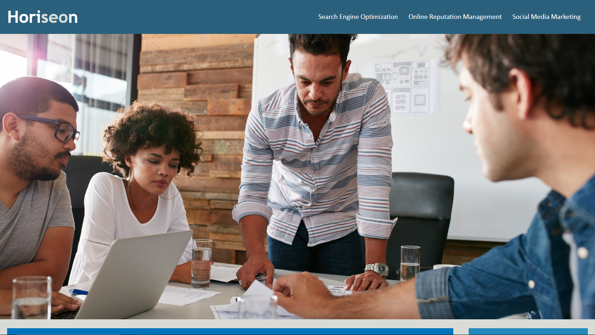

Ignacio Gamez Jr.
About Me
Sample Work
Contact Me
About Me
Ignacio Gamez Jr.
Sample Work
Horiseon Social Solution Services

Contact Me
Email:
ignaciogamez008@gmail.com
Github:
Ignacio's Github
 Ignacio Gamez Jr.
Ignacio Gamez Jr.